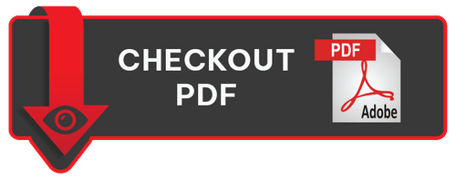

About Us
“INDIAN SCIENTIFIC” is the world’s most leading consulting firm, a reliable service provider occupied in offering All Product A Complete Laboratory Set-Up as per ISI /BIS (Bureau of Indian Standards) & ISI / BIS License Consultancy Works in all over India & All Foreign Countries. REGULATORY COMPLIANCES, INDIAN STANDARD ASSESSMENT like ISI Certification Services, ISI / BIS Foreign Manufacturer License Consultancy Works. All Product A Complete ALL Product In House Testing Laboratory Set-Up as per FSSAI (Food Safety Standards Authority of India) Norms & Regulation & FSSAI License (Central, State, Registration) Consultancy Works all over India. Indian BIS and CRS Scheme for Electronics & IT Goods, and many more. As of now, products certifications & compliances are being catered by ''INDIAN SCIENTIFIC'' The offered range of service is rendered in obedience with the quality constraints by our competent experts who hold a rich understanding of the particular fields.
Let's first look at what is BIS Certification?
BIS Certification: Under the BIS Act, 1986, the government of India established the National Indian certification body BIS i.e. Bureau of Indian Standards under the Indian Ministry of Consumer Protection, Food and Public Distribution. Bureau of Indian Standards is the largest Indian certification body and having an increasingly important role in managing, grading, and standardizing the quality standards of several consumer products. In this role, BIS as an agency is responsible for a number of key certifications in the Indian market.
The Bureau of Indian Standards issues BIS Certificate in India to the manufacturers of various products to assure product quality, consumers safety, and reliability of the customers. BIS gives the BIS certificate to the companies after confirming the standards of their products. Additionally, this process conducted by Bureau of India Standards helps the companies to put up a reputed brand image of their product in the industry. From all these years, the BIS has become the second name of quality and genuineness. After BIS Certification the manufacturers gets eligible to use the standard mark i.e, ISI mark symbol on their BIS certified products.
Why BIS Certificate?
Anything a person buys from food to cars, clothes to electronics, branded to unnamed products there is always a question that wanders in one's mind that how to know if he/she can trust the product or the company with the name product comes from. Are there any parameters by which one can estimate the luxury, quality, or grade of the product about to be bought, and if there is some kind of parameters then who decides these parameters? How is your customer going to know that they can trust your brand and its products? This is where BIS Certification comes into play.
BIS Certification in India is considered to be a mark of trust for the buyers. A BIS Certificate from the Bureau of Indian Standards allows the manufacturers to assure the consumers about product quality, consumer’s safety, and trustworthiness. Basically BIS Certification Scheme is a voluntary scheme, however some products are covered under the mandatory certification scheme of BIS.
What is  Mark?
Mark?
ISI stands for Indian Standards Institute, the National Standards body renamed Bureau of Indian Standards in 1987. The ISI mark is the standard mark provided to the manufacturers by the Bureau of Indian Standards for various products. The ISI Mark has been considered as a mark of purity, safety and trust since 1955. The ISI mark has served as a conformity mark for industrial items. It ensures that the product complies with an Indian standard (IS) established by India's national standards organization, the Bureau of Indian Standards (BIS).
ISI Certification is the process of obtaining the ISI mark for any product that complies the Indian Standards. Various electrical appliances require mandatory ISI mark, such as Electric Iron, Room Heaters, Room AC, Electric Stoves, Freezers, Electric cables, and other products like UPVC Pipes, Rubber & Leather Footwears, Composite Cements, various acids, etc.
Basic Requirements for Certification:
The following are the basic requirements for obtaining a BIS license, as listed below.
~ The product must meet the Indian Standard Specification criteria.
~ BIS license is only given to the factory (manufacturer of finished products), not to the Distributor/Retailer.
~ If a manufacturer has multiple factories, each of which is located at a distinct geographical address, the business must file a separate application for each product and factory location.
~ The laboratory should be fully equipped with product testing equipment as well as qualified quality control personnel to test the product in accordance with the applicable ISI.
~ All production machinery and testing facilities should be located on the factory premises as per ISI norms.
Benefits of Mark Certification
With BIS ISI Certificates, companies and their products simply unlock the following motives:
~ ISI Certificate allows the manufacturers uninterrupted manufacturing and selling of their products in every part of India.
~ An ISI certificate allows the manufacturers to manufacture products which are in the mandatory certification scheme. Manufacturing these products without an ISI certificate could result in a substantial fine, imprisonment or both.
~ ISI Mark on any product ensures consumer's safety and health and develops trust.
~ An ISI-certified product ensures high quality and consumer satisfaction, which increases revenue.
Do you know that BIS ISI Mark Certificate is mandatory in India for more than 150 products? Even though it is voluntary to get BIS, the BIS made it compulsory to attain the certificate on certain products to make sure the safety of the consumers from counterfeits and fake merchandise.
List of Products Under Certification:
- Food-related products
- Glass & Glassware
- Cylinders and regulators
- Building Materials
- Primary Batteries
- Rubber
- Oil pressure stoves
- Wire & Cables
- Medical equipment
- Shoes & Leather Products
- Cement
- Automotive
- Capacitors
- Aluminum
- Chemicals and fertilizers
- Wheel Rim & Valves
- Household electrical goods
- Steel Products
- Electric motors and transformers
Guideline for BIS Mark Certification for Domestic Manufacturer

.JPG)
Nikunj G. Savaliya
Founder & Co-Owner
Vikas S. Chavda
Co-Founder & Co-Owner